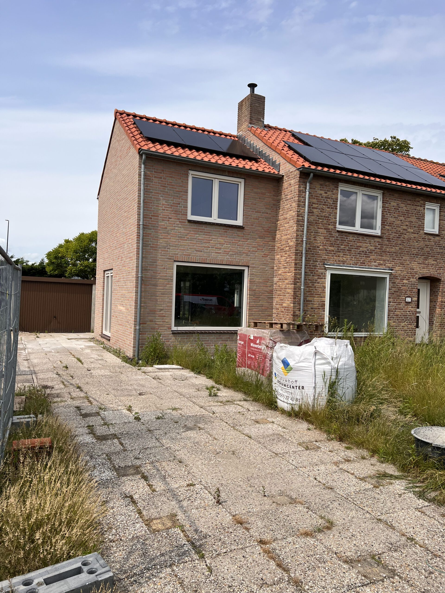

Waarom uitbouwen in Hoofddorp vaak speelt
In Hoofddorp en de rest van Haarlemmermeer zie je veel naoorlogse en nieuwere woningen met een tuin of een dakconstructie die ruimte biedt. Werk, Schiphol en goede verbindingen houden mensen vast. Tegelijk is de stap naar een grotere woning duur. Uitbouwen lost het ruimteprobleem op zonder dat je je hele leven opnieuw moet inrichten.
Of jouw woning geschikt is, hangt af van constructie, erfgrenzen en wat gemeente Haarlemmermeer toestaat. Daarom starten we met een heldere prijsindicatie online, en ronden we af met een afspraak op locatie.

Wat wij bouwen
Aanbouwdirect levert het totaalpakket huisuitbreiding als casco:
- Aanbouw / uitbouw
- Nokverhoging
- Dakopbouw
Casco betekent: wind- en waterdicht, geïsoleerd, kozijnen, elektra tot casco-niveau. Niet turn-key afgewerkt van binnen. Zo blijft de basis duidelijk, en weet je waar je budget naartoe gaat. Meer details: Wat zit erbij.
Wij zitten in Aalsmeer. Hoofddorp en Haarlemmermeer horen bij ons werkgebied; we komen graag langs als je een serieus plan hebt.
Van calculator naar afspraak
- Stel type, formaat en opties samen op de website
- Bekijk de transparante prijsindicatie (bandbreedte)
- Laat contactgegevens achter of bel / mail
- Op locatie maken we de definitieve offerte
Geen pushy sales: eerst duidelijkheid over de orde van grootte, daarna pas dieper de details in.
Vergunning in Haarlemmermeer
Regels verschillen per situatie: diepte van een uitbouw, hoogte van een dakopbouw, afstand tot de erfgrens. Gebruik het omgevingsloket en de informatie van gemeente Haarlemmermeer als leidraad. Wij kunnen meedenken over wat bouwtechnisch past; de gemeente beslist over de vergunning.
Veelgestelde vragen
Werken jullie ook buiten Hoofddorp, elders in Haarlemmermeer?
Ja, denk ook aan Nieuw-Vennep en andere plaatsen in de gemeente. Twijfel je over de afstand? Bel even met je postcode.
Is de online prijs definitief?
Nee. Het is een indicatie. Pas na opname op locatie krijg je een definitieve offerte. Dat staat ook zo bij de calculator.
Wat als ik alleen een dakopbouw wil?
Dat kan. Kies in de calculator voor dakopbouw en vul de maten in. Zo zie je meteen of het ongeveer past bij je budget.
Wil je een bandbreedte voor jouw plan in Hoofddorp?
Stel je aanbouw of dakopbouw samen, of bel ons vanuit Aalsmeer.